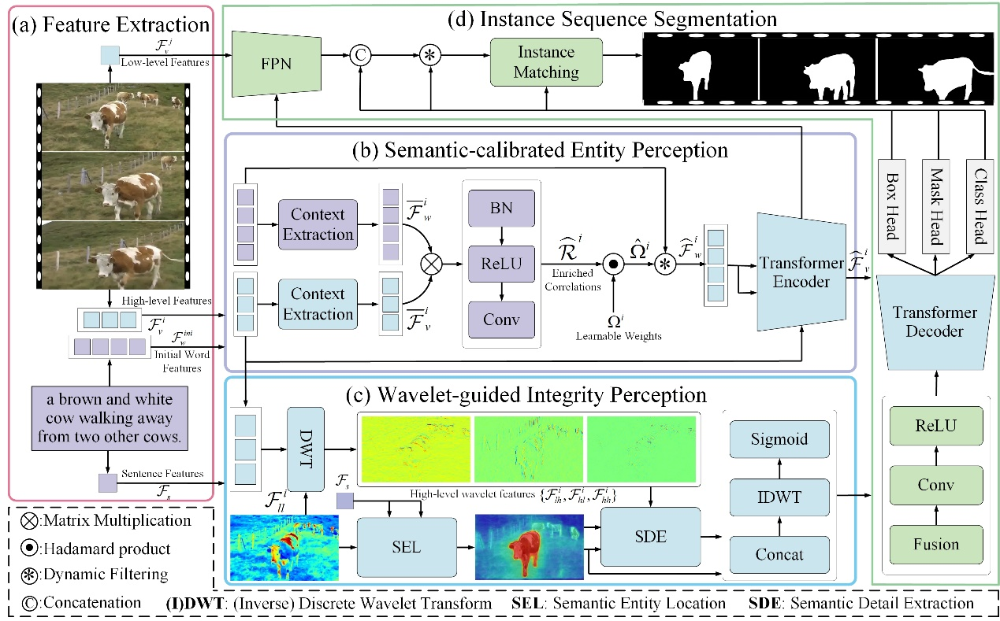
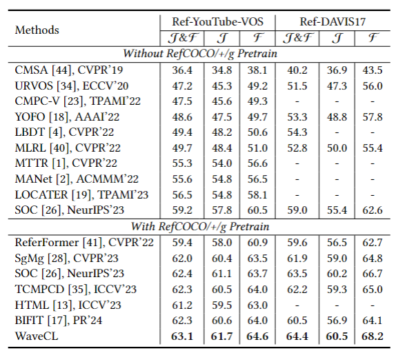
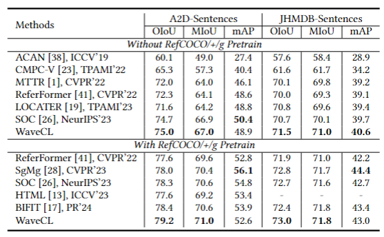
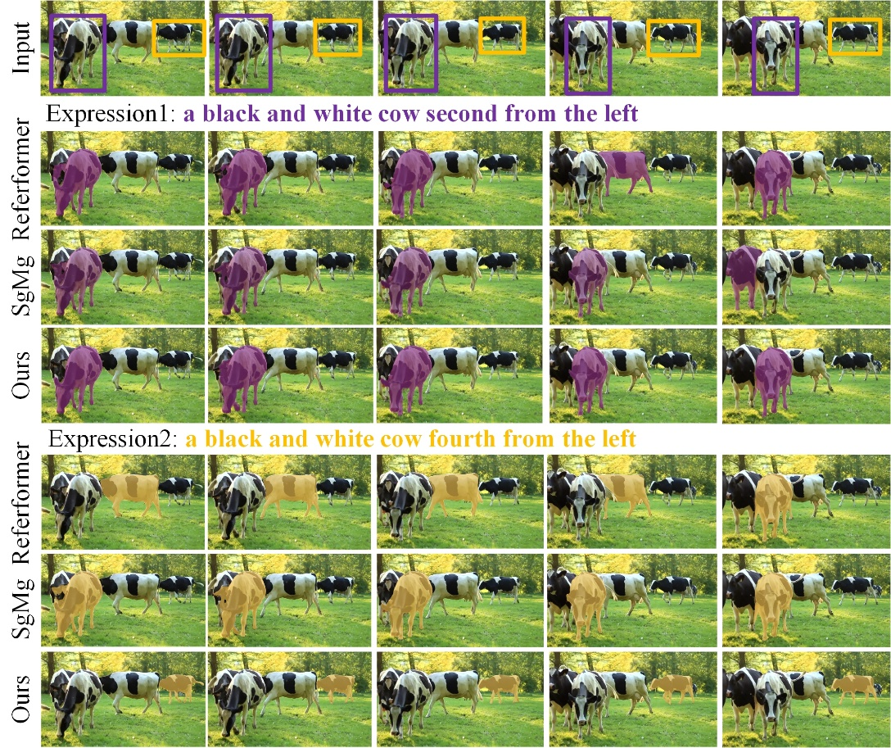

WaveCL: Wavelet Calibration Learning for Referring Video Object Segmentation
Ran Chen, Taiyi Su, Hanli Wang
Overview:
Referring video object segmentation (RVOS) focuses on segmenting target objects in a video based on natural language descriptions. However, existing methods typically rely on text cues that are unrelated to video content, and the target entity is only recognized in the pixel space. This often leads to ambiguous cross-modal understanding and fragmented perception across space and time, resulting in inaccurate or incomplete segmentation of the target objects. To address these challenges, a novel wavelet calibration learning (WaveCL) framework is proposed to unify cross-modal understanding and preserve spatial-temporal integrity of the target object. The WaveCL framework is built on two core components: semantic-calibrated entity perception (SEP) and wavelet-guided integrity perception (WIP). SEP aligns the textual semantics with video content, enabling more accurate and context-aware cross-modal understanding. WIP, on the other hand, leverages wavelet representations to capture fine-grained details of the target object from a global spatial-temporal perspective. By refining wavelet clues with the guidance of text queries, WIP enhances the integrity of segmentation. Through the collaboration of SEP and WIP, WaveCL enables precise, target-specific segmentation with detailed boundaries and consistent spatial-temporal perception. Extensive experiments on four benchmark datasets of Ref-YouTube-VOS, Ref-DAVIS17, A2D-Sentences, and JHMDB-Sentences show that WaveCL outperforms existing state-of-the-art methods.
Method:
The overview of the proposed WaveCL is depicted in Fig. 1. Specifically, WaveCL framework is built on two core components: Semantic-calibrated Entity Perception (SEP) and Wavelet-guided Integrity Perception (WIP). In the SEP module, video and language features are contextualized, and cross-modal associations are established by learning a textual projection kernel. This kernel is used to adaptively modulate the language expressions according to the corresponding video content. In the WIP module, Discrete Wavelet Transform (DWT) is employed to decompose video features into low- and high-frequency components within the wavelet space. This transformation leverages the inherent properties of wavelets to capture both global spatial-temporal correlations across the video and preserve detailed local information. To enhance the recognition of the target entity, a Semantic Entity Localization (SEL) mechanism is designed to purify the low-frequency information by incorporating sentence-level representations, ensuring an unbiased identification of the target entity. Finally, a Semantic Detail Extraction (SDE) technique is further developed to instruct the purified low-frequency information obtaining the details of the target entity from the high-frequency information.

Fig. 1. Overview of the proposed WaveCL framework.
Results:
The comparison results on the Ref-YouTube-VOS and Ref-DAVIS17 datasets between WaveCL and the state-of-the-art RVOS methods are shown in Table 1. The segmentation results on the A2D-Sentences and JHMDB-Sentences datasets are listed in Table 2.
Table 1. Comparison with state-of-the-art RVOS methods on Ref-YouTube-VOS and Ref-DAVIS17.

Table 2. Comparison with state-of-the-art RVOS methods on A2D-Sentences and JHMDB-Sentences.

As shown in Fig. 2, when presented with expressions of differing meanings, WaveCL successfully redirects its focus to the appropriate entity, whereas SgMg and Referformer often struggle to do so. These compelling results can be attributed to two key factors: the SEP module, which effectively bridges the gap between modalities and improves the model’s understanding of diverse expressions, and the WIP module, which further reinforces the spatial-temporal coherence of the target entity.

Fig. 2. Comparison of segmentation results by competing methods with different expressions. The objects referred to by the expressions are outlined in the same color as the expressions.
Source Code:
Original illustration: image placeholderWaveCL1.0.zip
Citation:
Please cite the following paper if you find this work useful:
Ran Chen, Taiyi Su, Hanli Wang, WaveCL: Wavelet Calibration Learning for Referring Video Object Segmentation, Proceedings of the 33rd ACM International Conference on Multimedia (ACM MM’25), accepted, Dublin, Ireland, Oct. 27-31, 2025.